Overview
The mizerEvolution package is an extension of the mizer package (https://github.com/sizespectrum/mizer) and simulate evolutionary processes within a size-structured model. Below are described the 5 steps to use this package which are described more in details further down.
Installing mizerEvolution
mizerEvolution is an R package available on GitHub so you first need to have R installed on your computer, need devtools package and then start an R session and type:
devtools::install_github("baldrech/mizerEvolution")After installing mizerEvolution, you need to load it via library().
mizerEvolution is compatible with R versions 2.0.4 and later. The source code for mizerEvolution is hosted on Github.
Setting the model parameters
As with Mizer, you first need to create an object of class MizerParams. At the moment, the wrapper function evoParams() helps you create this object. It is a tweaked version of newTraitParams which add the necessary parameters to support species evolution, therefore all the default parameters from Mizer are found back in this function. evoParams() adds the lineage parameter which is used to track the ancetry tree of species and the RDD parameter which is used to set the recruitment function. It’s default is extinctionRDD() which allow species to be removed from the ecosystem when they reach an abundance below 10 − 30ind.m − 3. In mizerEvolution, evolution comes from allowing specific parameters to change through time. These parameters are defined in the trait argument of evoProject. During the simulation, species will be considered as pool of phenotypes, each with a slighty different trait value. These phenotypes are generated semi-randomly, using only a rate of apparition inputed by the user. The phenotypes compete between each others and are pooled together only during the reproduction phase since they are still part of a same species. Generating phenotypes and removing the less abundant proxy natural selection and trait adaptation.
params <- evoParams(no_sp = 5 )Running a simulation
This is done by calling the evoProject() function (as in “project forward in time”) with the model parameters. Similar to Mizer’s project(), evoProject() projects the simulation in time while adding new phenotypes using the mutation parameter (rate of apparition of new phenotypes in the simulation). The trait parameter determines which species parameter is going to vary during the simulation and differentiate phenotypes between each other within each species. The default is set to w_mat, the maturation size.
sim <- evoProject(params = params, t_max = 200, mutation = 3, trait = "beta")
#> [1] "Data handling"This produces an object of class MizerSim which contains the results of the simulation.
Additional functions
The parameter initPool in evoProject() allows to initiate species as pool of phenotypes. Instead of starting with species composed of one phenotypes each, having initPool = 5 will add 5 randomly generated phenotypes per species at the start of the simulation (for a total of 6 phenotypes per species). The parameter initCondition allows to input a mizer object instead of a mizer param. This allows to start simulations from previously saved simulations.
Exploring the results
After a simulation has been run, the results can be examined using a range of plotting_functions, summary_functions and indicator_functions. The plot() function combines several of these plots into one:
plot(sim)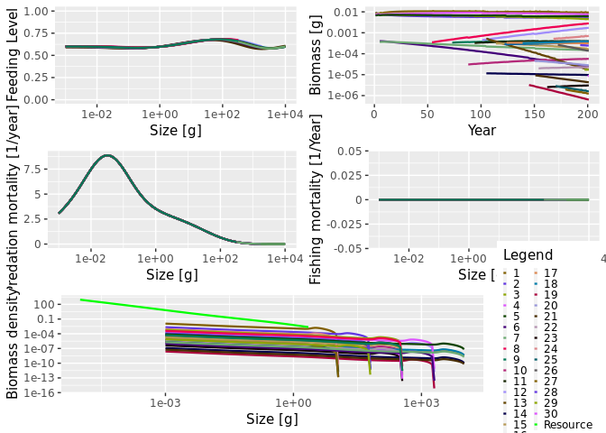
In this default Mizer plot, added phenotypes are considered as new species.
Package functionalities
New species are copy of existing ones albeit with a change to one trait.
Each projections containing a new species is independent of the others. They are saved in a temporary folder before being binded at the end of the simulation
New plot functions allow to explore the evolutionary results
Algorithm
Instead of projecting for the entire time one mizer class object, the evoProject() will only project for a shorter amount of time, until a new species needs to be added in the ecosystem. When adding a new species (time chosen randomly), the projection stops, a new species is added with addSpecies(). At the moment, to simulate mutations, the new species is a copy of an existing one albeit for a slight difference in one trait: the maturation size. Further update will include more than one trait (any parameter in the model can become a trait) and mixed reproduction as at the moment new species included this way reproduce independtly from their “parent” and therefore make 2 diffent species. Afte adding a new species, a new projection starts. It means that one simulation is in reality a string of small projection. The finalTouch function takes all theses projection and makes them into one MizerObject wich is usable by any vanilla Mizer functions.
Plotting evolutionary results
base Mizer functions cannot handle species being formed of different “sub-species” so all plot functions have been updated to show species or their “phenotypes” using the lineage parameter
Checking the biomass through time. The default plot has a colorblind of 10 colors and won’t work with more than 10 species, if you want to personalise the plot, use returnData = TRUE.
plotDynamics
plotDynamics output the same results as plotBiomass (species’ biomass thorugh time) if the phenotype argument is set to FALSE
plotDynamics(sim, phenotype = F)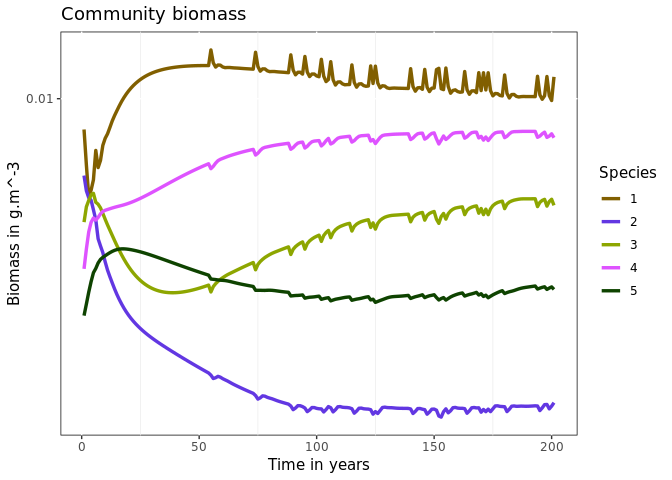
Showing the phenotypes as semi-transparent lines, with phenotype = TRUE (default)
plotDynamics(sim, phenotype = T)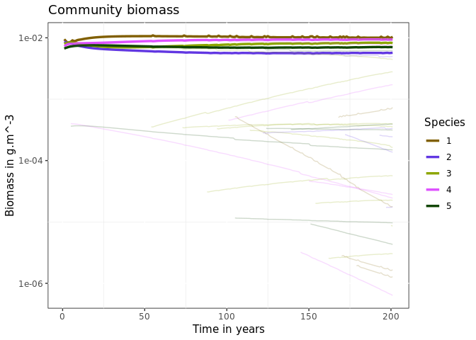
The species argument displays all the phenotypes of one species only (take species identity as value)
plotDynamics(sim,species = 2)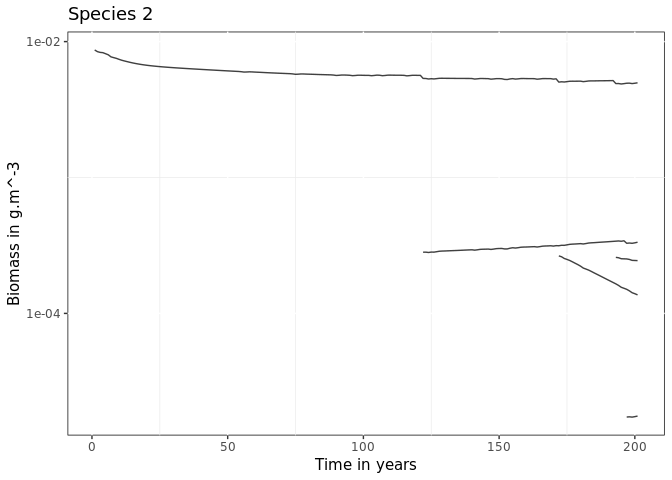
The trait value of the phenotypes can be displayed per phenotypes as a continuous gradient, only available when only one species is selected
plotDynamics(sim, species = 2, trait = sim@params@species_params$beta)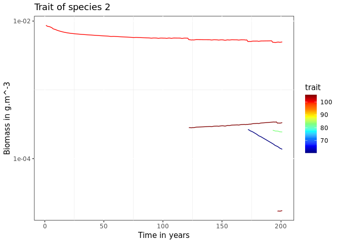
The SpIdx argument selects for a subset of species
plotDynamics(sim,SpIdx = c(1,2,3))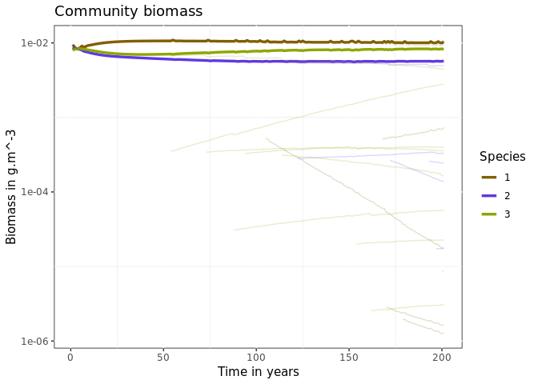
plotSS
The size spectrum plot can display abundance density or biomass with the biomass argument
plotSS(sim,biomass = F)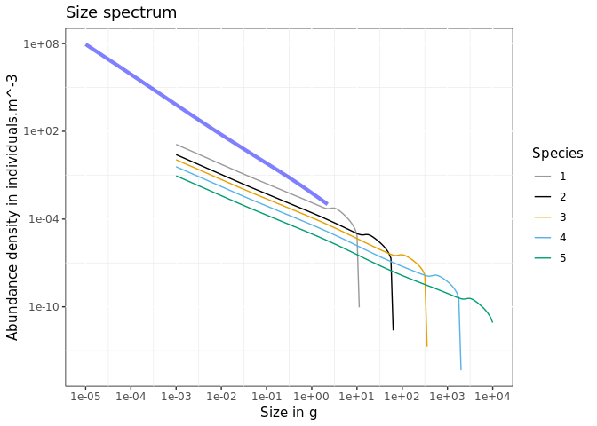
plotSS(sim,biomass = T)
It can also display 3 levels of grouping: community, species, phenotypes
plotSS(sim, community = T)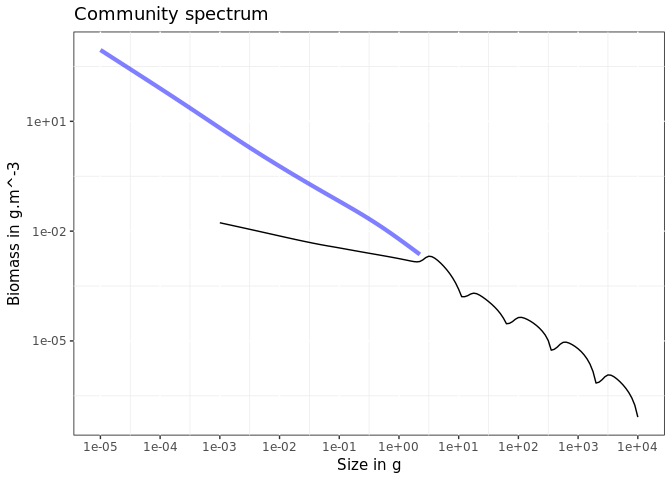
plotSS(sim)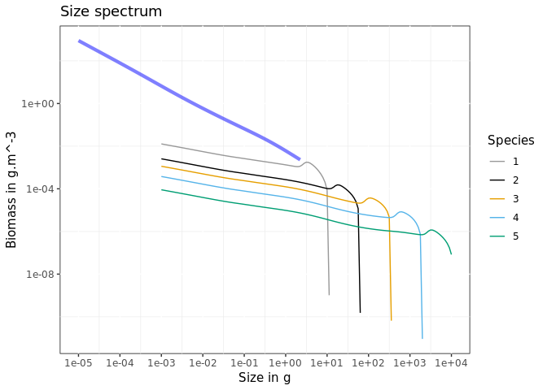
plotSS(sim, species = F)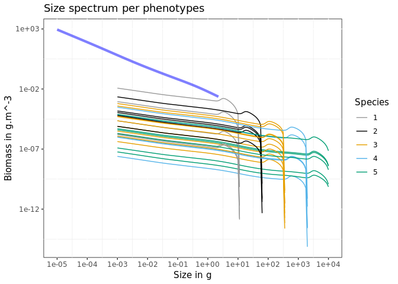
Species invasion
Instead of generating phenotypic diversity within existing species, the model can instead introduce mutants in an existing ecosystem. One just needs to give a data frame to the mutation argument instead of a numeric.
params<- evoParams()
alien <- params@species_params[4:5,] # copy existing data frame
alien$h <- 50 # change some parameters
alien$alpha <- .6
alien$time <- c(50,75) # when are the invasive species coming in?
alien$lineage <- factor(c(12,13),levels = c(12,13)) # need to specify a lineage for these species otherwise they will be related to the endemic ones
alien$init_n_multiplier <- NULL # multiplier for the initial abundance
alien$species <- as.character(c(12,13))
#important: for now need to add new species following the number of existing species (e.g. generated ecosystem contains 11 species so first invading species is 12). Does not work otherwise
sim <- evoProject(params = params, alien = alien, mutation = 0)
#> species w_min w_inf w_mat w_min_idx h gamma ks f0 fc beta
#> 1 1 0.001 10.00000 2.511886 1 40 2754.672 4 0.6 0.25 100
#> 2 2 0.001 19.95262 5.011872 1 40 2754.672 4 0.6 0.25 100
#> 3 3 0.001 39.81072 10.000000 1 40 2754.672 4 0.6 0.25 100
#> 4 4 0.001 79.43282 19.952623 1 40 2754.672 4 0.6 0.25 100
#> 5 5 0.001 158.48932 39.810717 1 40 2754.672 4 0.6 0.25 100
#> 6 6 0.001 316.22777 79.432823 1 40 2754.672 4 0.6 0.25 100
#> 7 7 0.001 630.95734 158.489319 1 40 2754.672 4 0.6 0.25 100
#> 8 8 0.001 1258.92541 316.227766 1 40 2754.672 4 0.6 0.25 100
#> 9 9 0.001 2511.88643 630.957344 1 40 2754.672 4 0.6 0.25 100
#> 10 10 0.001 5011.87234 1258.925412 1 40 2754.672 4 0.6 0.25 100
#> 11 11 0.001 10000.00000 2511.886432 1 40 2754.672 4 0.6 0.25 100
#> 12 12 0.001 79.43282 19.952623 1 50 2754.672 4 0.6 0.25 100
#> sigma z0 alpha erepro interaction_resource n p q
#> 1 1.3 0 0.4 0.11952402 1 0.6666667 0.6666667 0.7166667
#> 2 1.3 0 0.4 0.09480694 1 0.6666667 0.6666667 0.7166667
#> 3 1.3 0 0.4 0.07513533 1 0.6666667 0.6666667 0.7166667
#> 4 1.3 0 0.4 0.05979226 1 0.6666667 0.6666667 0.7166667
#> 5 1.3 0 0.4 0.04809642 1 0.6666667 0.6666667 0.7166667
#> 6 1.3 0 0.4 0.03924217 1 0.6666667 0.6666667 0.7166667
#> 7 1.3 0 0.4 0.03232946 1 0.6666667 0.6666667 0.7166667
#> 8 1.3 0 0.4 0.02658807 1 0.6666667 0.6666667 0.7166667
#> 9 1.3 0 0.4 0.02163458 1 0.6666667 0.6666667 0.7166667
#> 10 1.3 0 0.4 0.01743907 1 0.6666667 0.6666667 0.7166667
#> 11 1.3 0 0.4 0.01403004 1 0.6666667 0.6666667 0.7166667
#> 12 1.3 0 0.6 0.05979226 1 0.6666667 0.6666667 0.7166667
#> pred_kernel_type k w_mat25 m R_max lineage ea_int ca_int zeta pop
#> 1 lognormal 0 2.250546 1 1.032270637 1 0 0 0.2 1
#> 2 lognormal 0 4.490429 1 0.635115196 2 0 0 0.2 1
#> 3 lognormal 0 8.959585 1 0.390761200 3 0 0 0.2 1
#> 4 lognormal 0 17.876722 1 0.240419874 4 0 0 0.2 1
#> 5 lognormal 0 35.668749 1 0.147920816 5 0 0 0.2 1
#> 6 lognormal 0 71.168510 1 0.091009814 6 0 0 0.2 1
#> 7 lognormal 0 141.999846 1 0.055994730 7 0 0 0.2 1
#> 8 lognormal 0 283.326942 1 0.034451337 8 0 0 0.2 1
#> 9 lognormal 0 565.311571 1 0.021196542 9 0 0 0.2 1
#> 10 lognormal 0 1127.944873 1 0.013041392 10 0 0 0.2 1
#> 11 lognormal 0 2250.545898 1 0.008023851 11 0 0 0.2 1
#> 12 lognormal 0 17.876722 1 0.240419874 12 0 0 0.2 1
#> ext time
#> 1 FALSE NA
#> 2 FALSE NA
#> 3 FALSE NA
#> 4 FALSE NA
#> 5 FALSE NA
#> 6 FALSE NA
#> 7 FALSE NA
#> 8 FALSE NA
#> 9 FALSE NA
#> 10 FALSE NA
#> 11 FALSE NA
#> 12 FALSE 50
#> species w_min w_inf w_mat w_min_idx h gamma ks f0 fc beta
#> 1 1 0.001 10.00000 2.511886 1 40 2754.672 4 0.6 0.25 100
#> 2 2 0.001 19.95262 5.011872 1 40 2754.672 4 0.6 0.25 100
#> 3 3 0.001 39.81072 10.000000 1 40 2754.672 4 0.6 0.25 100
#> 4 4 0.001 79.43282 19.952623 1 40 2754.672 4 0.6 0.25 100
#> 5 5 0.001 158.48932 39.810717 1 40 2754.672 4 0.6 0.25 100
#> 6 6 0.001 316.22777 79.432823 1 40 2754.672 4 0.6 0.25 100
#> 7 7 0.001 630.95734 158.489319 1 40 2754.672 4 0.6 0.25 100
#> 8 8 0.001 1258.92541 316.227766 1 40 2754.672 4 0.6 0.25 100
#> 9 9 0.001 2511.88643 630.957344 1 40 2754.672 4 0.6 0.25 100
#> 10 10 0.001 5011.87234 1258.925412 1 40 2754.672 4 0.6 0.25 100
#> 11 11 0.001 10000.00000 2511.886432 1 40 2754.672 4 0.6 0.25 100
#> 12 12 0.001 79.43282 19.952623 1 50 2754.672 4 0.6 0.25 100
#> 13 13 0.001 158.48932 39.810717 1 50 2754.672 4 0.6 0.25 100
#> sigma z0 alpha erepro interaction_resource n p q
#> 1 1.3 0 0.4 0.11952402 1 0.6666667 0.6666667 0.7166667
#> 2 1.3 0 0.4 0.09480694 1 0.6666667 0.6666667 0.7166667
#> 3 1.3 0 0.4 0.07513533 1 0.6666667 0.6666667 0.7166667
#> 4 1.3 0 0.4 0.05979226 1 0.6666667 0.6666667 0.7166667
#> 5 1.3 0 0.4 0.04809642 1 0.6666667 0.6666667 0.7166667
#> 6 1.3 0 0.4 0.03924217 1 0.6666667 0.6666667 0.7166667
#> 7 1.3 0 0.4 0.03232946 1 0.6666667 0.6666667 0.7166667
#> 8 1.3 0 0.4 0.02658807 1 0.6666667 0.6666667 0.7166667
#> 9 1.3 0 0.4 0.02163458 1 0.6666667 0.6666667 0.7166667
#> 10 1.3 0 0.4 0.01743907 1 0.6666667 0.6666667 0.7166667
#> 11 1.3 0 0.4 0.01403004 1 0.6666667 0.6666667 0.7166667
#> 12 1.3 0 0.6 0.05979226 1 0.6666667 0.6666667 0.7166667
#> 13 1.3 0 0.6 0.04809642 1 0.6666667 0.6666667 0.7166667
#> pred_kernel_type k w_mat25 m R_max lineage ea_int ca_int zeta pop
#> 1 lognormal 0 2.250546 1 1.032270637 1 0 0 0.2 1
#> 2 lognormal 0 4.490429 1 0.635115196 2 0 0 0.2 1
#> 3 lognormal 0 8.959585 1 0.390761200 3 0 0 0.2 1
#> 4 lognormal 0 17.876722 1 0.240419874 4 0 0 0.2 1
#> 5 lognormal 0 35.668749 1 0.147920816 5 0 0 0.2 1
#> 6 lognormal 0 71.168510 1 0.091009814 6 0 0 0.2 1
#> 7 lognormal 0 141.999846 1 0.055994730 7 0 0 0.2 1
#> 8 lognormal 0 283.326942 1 0.034451337 8 0 0 0.2 1
#> 9 lognormal 0 565.311571 1 0.021196542 9 0 0 0.2 1
#> 10 lognormal 0 1127.944873 1 0.013041392 10 0 0 0.2 1
#> 11 lognormal 0 2250.545898 1 0.008023851 11 0 0 0.2 1
#> 12 lognormal 0 17.876722 1 0.240419874 12 0 0 0.2 1
#> 13 lognormal 0 35.668749 1 0.147920816 13 0 0 0.2 1
#> ext time
#> 1 FALSE NA
#> 2 FALSE NA
#> 3 FALSE NA
#> 4 FALSE NA
#> 5 FALSE NA
#> 6 FALSE NA
#> 7 FALSE NA
#> 8 FALSE NA
#> 9 FALSE NA
#> 10 FALSE NA
#> 11 FALSE NA
#> 12 FALSE 50
#> 13 FALSE 75
#> [1] "Data handling"
plotDynamics(sim)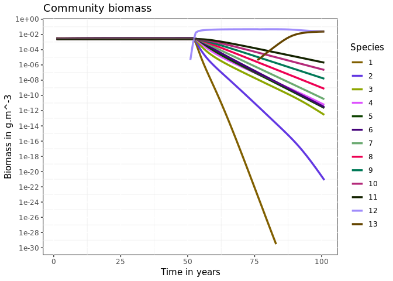
Randomly introducing alien species. By giving an integer to the alien argument, this will become a rate per thousand of invation rate. The alien_n_init controls the initial level of abundance when introducing an invasive species. It is a multiplier of the inital abundance calculated to create a size spectrum. Default is set to NULL, making it kappa/1000.
params <- evoParams()
sim <- evoProject(params = params, mutation = 0, alien = 3, alien_init_n = NULL)
#> [1] "alien trying to invade ecosystem"
#> species w_min w_inf w_mat w_min_idx h gamma ks
#> 1 1 0.001 10.00000 2.511886 1 40.00 2.754672e+03 4.000000
#> 2 2 0.001 19.95262 5.011872 1 40.00 2.754672e+03 4.000000
#> 3 3 0.001 39.81072 10.000000 1 40.00 2.754672e+03 4.000000
#> 4 4 0.001 79.43282 19.952623 1 40.00 2.754672e+03 4.000000
#> 5 5 0.001 158.48932 39.810717 1 40.00 2.754672e+03 4.000000
#> 6 6 0.001 316.22777 79.432823 1 40.00 2.754672e+03 4.000000
#> 7 7 0.001 630.95734 158.489319 1 40.00 2.754672e+03 4.000000
#> 8 8 0.001 1258.92541 316.227766 1 40.00 2.754672e+03 4.000000
#> 9 9 0.001 2511.88643 630.957344 1 40.00 2.754672e+03 4.000000
#> 10 10 0.001 5011.87234 1258.925412 1 40.00 2.754672e+03 4.000000
#> 11 11 0.001 10000.00000 2511.886432 1 40.00 2.754672e+03 4.000000
#> 12 12 0.001 3940.80059 339.489082 1 126.02 1.637959e-10 3.773004
#> f0 fc beta sigma z0 alpha erepro interaction_resource
#> 1 0.6 0.25 100.0 1.300000 0.00000000 0.4 0.11952402 1
#> 2 0.6 0.25 100.0 1.300000 0.00000000 0.4 0.09480694 1
#> 3 0.6 0.25 100.0 1.300000 0.00000000 0.4 0.07513533 1
#> 4 0.6 0.25 100.0 1.300000 0.00000000 0.4 0.05979226 1
#> 5 0.6 0.25 100.0 1.300000 0.00000000 0.4 0.04809642 1
#> 6 0.6 0.25 100.0 1.300000 0.00000000 0.4 0.03924217 1
#> 7 0.6 0.25 100.0 1.300000 0.00000000 0.4 0.03232946 1
#> 8 0.6 0.25 100.0 1.300000 0.00000000 0.4 0.02658807 1
#> 9 0.6 0.25 100.0 1.300000 0.00000000 0.4 0.02163458 1
#> 10 0.6 0.25 100.0 1.300000 0.00000000 0.4 0.01743907 1
#> 11 0.6 0.25 100.0 1.300000 0.00000000 0.4 0.01403004 1
#> 12 0.6 0.25 396272.8 2.265746 0.03798596 0.6 1.00000000 1
#> n p q pred_kernel_type k w_mat25 m R_max
#> 1 0.6666667 0.6666667 0.7166667 lognormal 0 2.250546 1 1.032270637
#> 2 0.6666667 0.6666667 0.7166667 lognormal 0 4.490429 1 0.635115196
#> 3 0.6666667 0.6666667 0.7166667 lognormal 0 8.959585 1 0.390761200
#> 4 0.6666667 0.6666667 0.7166667 lognormal 0 17.876722 1 0.240419874
#> 5 0.6666667 0.6666667 0.7166667 lognormal 0 35.668749 1 0.147920816
#> 6 0.6666667 0.6666667 0.7166667 lognormal 0 71.168510 1 0.091009814
#> 7 0.6666667 0.6666667 0.7166667 lognormal 0 141.999846 1 0.055994730
#> 8 0.6666667 0.6666667 0.7166667 lognormal 0 283.326942 1 0.034451337
#> 9 0.6666667 0.6666667 0.7166667 lognormal 0 565.311571 1 0.021196542
#> 10 0.6666667 0.6666667 0.7166667 lognormal 0 1127.944873 1 0.013041392
#> 11 0.6666667 0.6666667 0.7166667 lognormal 0 2250.545898 1 0.008023851
#> 12 0.6666667 0.7000000 0.7166667 lognormal 0 304.168115 1 10.000000000
#> lineage ea_int ca_int zeta pop ext k_vb
#> 1 1 0 0 0.2 1 FALSE NA
#> 2 2 0 0 0.2 1 FALSE NA
#> 3 3 0 0 0.2 1 FALSE NA
#> 4 4 0 0 0.2 1 FALSE NA
#> 5 5 0 0 0.2 1 FALSE NA
#> 6 6 0 0 0.2 1 FALSE NA
#> 7 7 0 0 0.2 1 FALSE NA
#> 8 8 0 0 0.2 1 FALSE NA
#> 9 9 0 0 0.2 1 FALSE NA
#> 10 10 0 0 0.2 1 FALSE NA
#> 11 11 0 0 0.2 1 FALSE NA
#> 12 12 0 0 0.2 19 FALSE 0.7476512
#> [1] "alien trying to invade ecosystem"
#> species w_min w_inf w_mat w_min_idx h gamma
#> 1 1 0.001 10.00000 2.511886 1 40.00000 2.754672e+03
#> 2 2 0.001 19.95262 5.011872 1 40.00000 2.754672e+03
#> 3 3 0.001 39.81072 10.000000 1 40.00000 2.754672e+03
#> 4 4 0.001 79.43282 19.952623 1 40.00000 2.754672e+03
#> 5 5 0.001 158.48932 39.810717 1 40.00000 2.754672e+03
#> 6 6 0.001 316.22777 79.432823 1 40.00000 2.754672e+03
#> 7 7 0.001 630.95734 158.489319 1 40.00000 2.754672e+03
#> 8 8 0.001 1258.92541 316.227766 1 40.00000 2.754672e+03
#> 9 9 0.001 2511.88643 630.957344 1 40.00000 2.754672e+03
#> 10 10 0.001 5011.87234 1258.925412 1 40.00000 2.754672e+03
#> 11 11 0.001 10000.00000 2511.886432 1 40.00000 2.754672e+03
#> 12 12 0.001 3940.80059 339.489082 1 126.01997 1.637959e-10
#> 13 13 0.001 277.17742 46.981701 1 41.45574 6.588478e-11
#> ks f0 fc beta sigma z0 alpha erepro
#> 1 4.000000 0.6 0.25 100.0 1.300000 0.00000000 0.4 0.11952402
#> 2 4.000000 0.6 0.25 100.0 1.300000 0.00000000 0.4 0.09480694
#> 3 4.000000 0.6 0.25 100.0 1.300000 0.00000000 0.4 0.07513533
#> 4 4.000000 0.6 0.25 100.0 1.300000 0.00000000 0.4 0.05979226
#> 5 4.000000 0.6 0.25 100.0 1.300000 0.00000000 0.4 0.04809642
#> 6 4.000000 0.6 0.25 100.0 1.300000 0.00000000 0.4 0.03924217
#> 7 4.000000 0.6 0.25 100.0 1.300000 0.00000000 0.4 0.03232946
#> 8 4.000000 0.6 0.25 100.0 1.300000 0.00000000 0.4 0.02658807
#> 9 4.000000 0.6 0.25 100.0 1.300000 0.00000000 0.4 0.02163458
#> 10 4.000000 0.6 0.25 100.0 1.300000 0.00000000 0.4 0.01743907
#> 11 4.000000 0.6 0.25 100.0 1.300000 0.00000000 0.4 0.01403004
#> 12 3.773004 0.6 0.25 396272.8 2.265746 0.03798596 0.6 1.00000000
#> 13 2.074027 0.6 0.25 207208.2 1.917540 0.09202348 0.6 1.00000000
#> interaction_resource n p q pred_kernel_type k
#> 1 1 0.6666667 0.6666667 0.7166667 lognormal 0
#> 2 1 0.6666667 0.6666667 0.7166667 lognormal 0
#> 3 1 0.6666667 0.6666667 0.7166667 lognormal 0
#> 4 1 0.6666667 0.6666667 0.7166667 lognormal 0
#> 5 1 0.6666667 0.6666667 0.7166667 lognormal 0
#> 6 1 0.6666667 0.6666667 0.7166667 lognormal 0
#> 7 1 0.6666667 0.6666667 0.7166667 lognormal 0
#> 8 1 0.6666667 0.6666667 0.7166667 lognormal 0
#> 9 1 0.6666667 0.6666667 0.7166667 lognormal 0
#> 10 1 0.6666667 0.6666667 0.7166667 lognormal 0
#> 11 1 0.6666667 0.6666667 0.7166667 lognormal 0
#> 12 1 0.6666667 0.7000000 0.7166667 lognormal 0
#> 13 1 0.6666667 0.7000000 0.7166667 lognormal 0
#> w_mat25 m R_max lineage ea_int ca_int zeta pop ext k_vb
#> 1 2.250546 1 1.032270637 1 0 0 0.2 1 FALSE NA
#> 2 4.490429 1 0.635115196 2 0 0 0.2 1 FALSE NA
#> 3 8.959585 1 0.390761200 3 0 0 0.2 1 FALSE NA
#> 4 17.876722 1 0.240419874 4 0 0 0.2 1 FALSE NA
#> 5 35.668749 1 0.147920816 5 0 0 0.2 1 FALSE NA
#> 6 71.168510 1 0.091009814 6 0 0 0.2 1 FALSE NA
#> 7 141.999846 1 0.055994730 7 0 0 0.2 1 FALSE NA
#> 8 283.326942 1 0.034451337 8 0 0 0.2 1 FALSE NA
#> 9 565.311571 1 0.021196542 9 0 0 0.2 1 FALSE NA
#> 10 1127.944873 1 0.013041392 10 0 0 0.2 1 FALSE NA
#> 11 2250.545898 1 0.008023851 11 0 0 0.2 1 FALSE NA
#> 12 304.168115 1 10.000000000 12 0 0 0.2 19 FALSE 0.7476512
#> 13 42.093652 1 10.000000000 13 0 0 0.2 78 FALSE 0.6667926
#> [1] "alien trying to invade ecosystem"
#> species w_min w_inf w_mat w_min_idx h gamma
#> 1 1 0.001 10.00000 2.511886 1 40.00000 2.754672e+03
#> 2 2 0.001 19.95262 5.011872 1 40.00000 2.754672e+03
#> 3 3 0.001 39.81072 10.000000 1 40.00000 2.754672e+03
#> 4 4 0.001 79.43282 19.952623 1 40.00000 2.754672e+03
#> 5 5 0.001 158.48932 39.810717 1 40.00000 2.754672e+03
#> 6 6 0.001 316.22777 79.432823 1 40.00000 2.754672e+03
#> 7 7 0.001 630.95734 158.489319 1 40.00000 2.754672e+03
#> 8 8 0.001 1258.92541 316.227766 1 40.00000 2.754672e+03
#> 9 9 0.001 2511.88643 630.957344 1 40.00000 2.754672e+03
#> 10 10 0.001 5011.87234 1258.925412 1 40.00000 2.754672e+03
#> 11 11 0.001 10000.00000 2511.886432 1 40.00000 2.754672e+03
#> 12 12 0.001 3940.80059 339.489082 1 126.01997 1.637959e-10
#> 13 13 0.001 277.17742 46.981701 1 41.45574 6.588478e-11
#> 14 14 0.001 831.22889 160.883313 1 91.66642 5.071192e-10
#> ks f0 fc beta sigma z0 alpha erepro
#> 1 4.000000 0.6 0.25 100.0 1.3000000 0.00000000 0.4 0.11952402
#> 2 4.000000 0.6 0.25 100.0 1.3000000 0.00000000 0.4 0.09480694
#> 3 4.000000 0.6 0.25 100.0 1.3000000 0.00000000 0.4 0.07513533
#> 4 4.000000 0.6 0.25 100.0 1.3000000 0.00000000 0.4 0.05979226
#> 5 4.000000 0.6 0.25 100.0 1.3000000 0.00000000 0.4 0.04809642
#> 6 4.000000 0.6 0.25 100.0 1.3000000 0.00000000 0.4 0.03924217
#> 7 4.000000 0.6 0.25 100.0 1.3000000 0.00000000 0.4 0.03232946
#> 8 4.000000 0.6 0.25 100.0 1.3000000 0.00000000 0.4 0.02658807
#> 9 4.000000 0.6 0.25 100.0 1.3000000 0.00000000 0.4 0.02163458
#> 10 4.000000 0.6 0.25 100.0 1.3000000 0.00000000 0.4 0.01743907
#> 11 4.000000 0.6 0.25 100.0 1.3000000 0.00000000 0.4 0.01403004
#> 12 3.773004 0.6 0.25 396272.8 2.2657458 0.03798596 0.6 1.00000000
#> 13 2.074027 0.6 0.25 207208.2 1.9175405 0.09202348 0.6 1.00000000
#> 14 7.172202 0.6 0.25 480634.8 0.5304179 0.06381328 0.6 1.00000000
#> interaction_resource n p q pred_kernel_type k
#> 1 1 0.6666667 0.6666667 0.7166667 lognormal 0
#> 2 1 0.6666667 0.6666667 0.7166667 lognormal 0
#> 3 1 0.6666667 0.6666667 0.7166667 lognormal 0
#> 4 1 0.6666667 0.6666667 0.7166667 lognormal 0
#> 5 1 0.6666667 0.6666667 0.7166667 lognormal 0
#> 6 1 0.6666667 0.6666667 0.7166667 lognormal 0
#> 7 1 0.6666667 0.6666667 0.7166667 lognormal 0
#> 8 1 0.6666667 0.6666667 0.7166667 lognormal 0
#> 9 1 0.6666667 0.6666667 0.7166667 lognormal 0
#> 10 1 0.6666667 0.6666667 0.7166667 lognormal 0
#> 11 1 0.6666667 0.6666667 0.7166667 lognormal 0
#> 12 1 0.6666667 0.7000000 0.7166667 lognormal 0
#> 13 1 0.6666667 0.7000000 0.7166667 lognormal 0
#> 14 1 0.6666667 0.7000000 0.7166667 lognormal 0
#> w_mat25 m R_max lineage ea_int ca_int zeta pop ext k_vb
#> 1 2.250546 1 1.032270637 1 0 0 0.2 1 FALSE NA
#> 2 4.490429 1 0.635115196 2 0 0 0.2 1 FALSE NA
#> 3 8.959585 1 0.390761200 3 0 0 0.2 1 FALSE NA
#> 4 17.876722 1 0.240419874 4 0 0 0.2 1 FALSE NA
#> 5 35.668749 1 0.147920816 5 0 0 0.2 1 FALSE NA
#> 6 71.168510 1 0.091009814 6 0 0 0.2 1 FALSE NA
#> 7 141.999846 1 0.055994730 7 0 0 0.2 1 FALSE NA
#> 8 283.326942 1 0.034451337 8 0 0 0.2 1 FALSE NA
#> 9 565.311571 1 0.021196542 9 0 0 0.2 1 FALSE NA
#> 10 1127.944873 1 0.013041392 10 0 0 0.2 1 FALSE NA
#> 11 2250.545898 1 0.008023851 11 0 0 0.2 1 FALSE NA
#> 12 304.168115 1 10.000000000 12 0 0 0.2 19 FALSE 0.7476512
#> 13 42.093652 1 10.000000000 13 0 0 0.2 78 FALSE 0.6667926
#> 14 144.144765 1 10.000000000 14 0 0 0.2 95 FALSE 1.0382023
#> [1] "Data handling"
plotDynamics(sim)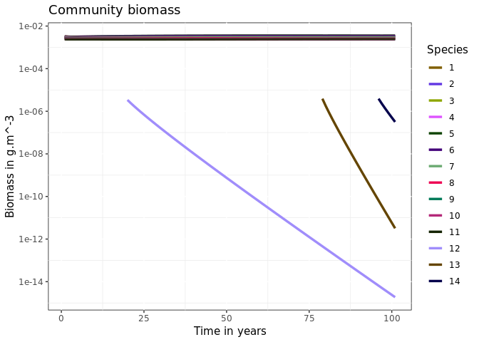
# plotSS(sim)One can supply a data frame of trait values which should be used to create invasive species using trait_range.
The default data frame is
| trait | distribution | mean | sd |
|---|---|---|---|
| w_inf | lnorm | 6.764846e+00 | 2.252483e+00 |
| betaS | norm | 1.862222e+02 | 1.765973e+02 |
| betaL | norm | 2.434883e+05 | 1.443748e+05 |
| sigma | norm | 1.716667e+00 | 5.742144e-01 |
| k_vb | norm | 4.440833e-01 | 2.729348e-01 |
| ks | norm | 6.289310e+00 | 2.573763e+00 |
| eta | norm | 1.207153e-01 | 1.148086e-01 |
These values are taken from the North Sea parameters.
The current assumptions are:
w_inffollows a logarithmic distributionbetafollows a u-shaped distribution caracterised by fitting two normal distributions over small betas (piscivore) and large betas (planktivore) speciessigma,k_vb,ksandetafollow normal distributionw_matis generated throughw_infxeta
Next update: switch beta, sigma, k_vb and ks to uniform distribution
Updating existing params
The argument updateParams in evoParams updates an existing mizerParams object into a mizerEvolution compatible object.
newP <- evoParams(updateParams = NS_params)
sim <- evoProject(params = newP, mutation = 1, trait = "beta")
#> [1] "Data handling"
plotDynamics(sim)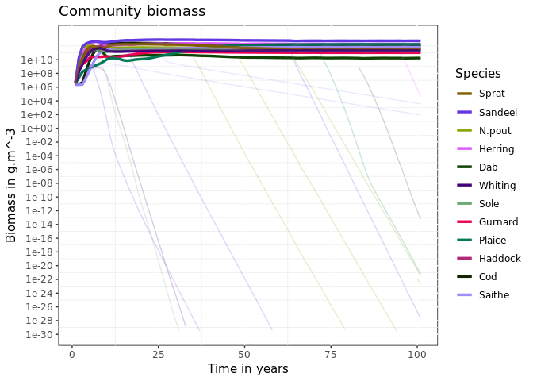
There are no differences if mutation is set to 0
old_sim <- project(NS_params)
sim <- evoProject(params = newP, mutation = 0)
plotDynamics(sim)
plotBiomass(old_sim)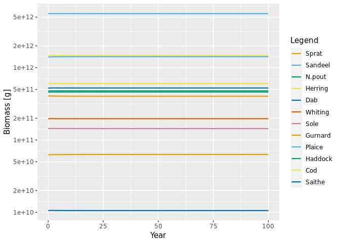
Invasions work too
sim_inv <- evoProject(params = newP, mutation = 0, alien =2)
plotDynamics(sim_inv)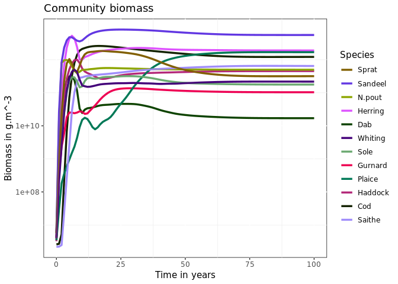